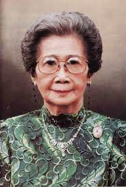
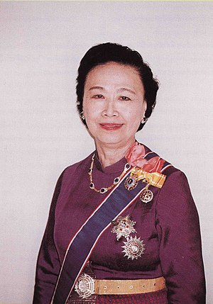
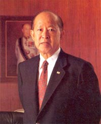
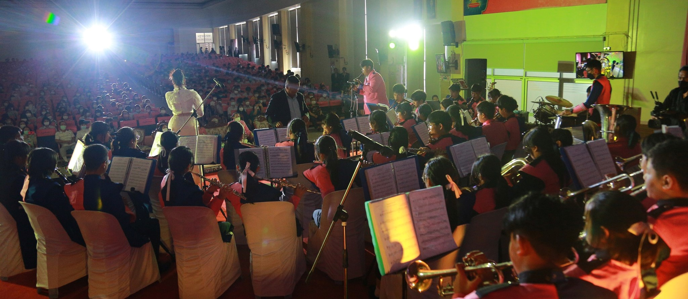

รายละเอียดทั่วไป
ชื่อ : เตรียมอุดมศึกษาพัฒนาการ
คำขวัญ : ความเป็นเลิศทางวิชาการและคุณธรรม
ที่อยู่ : 499 ซ. พัฒนาการ 58 แขวงสวนหลวง กรุงเทพมหานคร 10250

ชื่อ : เตรียมอุดมศึกษาพัฒนาการ
คำขวัญ : ความเป็นเลิศทางวิชาการและคุณธรรม
ที่อยู่ : 499 ซ. พัฒนาการ 58 แขวงสวนหลวง กรุงเทพมหานคร 10250
โรงเรียนเตรียมอุดมศึกษาพัฒนาการ ได้รับการประกาศจัดตั้ง จากกระทรวงศึกษาธิการเมื่อ วันที่ 21 กุมภาพันธ์ พ.ศ.2521 มีชื่อเดิมว่าโรงเรียนเตรียมอุดมศึกษา2 เพื่อให้เป็นสาขาโรงเรียนเตรียมอุดมศึกษาพญาไท ทั้งนี้ คุณหญิงบุญเลื่อน เครือตราชู อดีตผู้อำนวยการ โรงเรียนเตรียมอุดมศึกษา ได้ขอที่ดินจากท่านเจ้าสัวอื้อจือเหลียง
.jpg)
ท่านเจ้าสัวอื้อจือเหลียง
ซึ่งต่อมา นายยอดยิ่ง เอื้อวัฒนสกุล บุตรชาย ได้เป็นผู้โอนกรรมสิทธิ์ที่ดินจำนวน 38 ไร่ ให้กรมสามัญศึกษา กระทรวงศึกษาธิการ เพื่อสร้างโรงเรียนเตรียมอุดมศึกษา 2 เมื่อคุณหญิงบุญเลื่อน เครือตราชู ไปดำรงตำแหน่งรองอธิบดีกรมสามัญศึกษา และคุณหญิงสุชาดา ถิระวัฒน์ มาดำรงตำแหน่ง ผู้อำนวยการโรงเรียนเตรียมอุดมศึกษา แทนนั้นท่านได้ดำเนินการจัดตั้งสาขา โรงเรียนเตรียมอุดมศึกษาขึ้น รวมทั้งได้วางแผน และ ขออนุมัติก่อสร้างอาคารต่างๆ
 นายยอดยิ่ง เอื้อวัฒนสกุล
โรงเรียนเตรียมอุดมศึกษาพัฒนาการ เริ่มรับนักเรียนชั้นมัธยมศึกษาปีที่ 1 จำนวน 12 ห้องเรียน ในปีการศึกษา 2521 โดยอาศัยเรียนที่โรงเรียนเตรียมอุดมศึกษา ปีต่อมาจึงได้ย้ายมาเรียนในสถานที่ปัจจุบันในวันที่ 9 พฤศจิกายน
กรมสามัญศึกษาได้ประกาศ เปลี่ยนชื่อ “โรงเรียนเตรียมอุดมศึกษา 2” เป็น “โรงเรียนเตรียมอุดมศึกษาพัฒนาการ” และได้รับพระราชทาน พระบรมราชานุญาต ให้ใช้ตราพระเกี้ยวเป็นสัญลักษณ์ประจำโรงเรียน เช่นเดียวกับ โรงเรียนเตรียมอุดมศึกษา และมีปรัชญาของโรงเรียน คือ “ความเป็นเลิศทางวิชาการ และคุณธรรม” และคติพจน์ประจำโรงเรียน คือ “สจฺจญจ ปญญาจ นรานํ วุฑฒิ” (อ่านว่า สัด-จัน-จะ-ปัน-ยา-จะ-นะ-รา-นัง-วุด-ทิ) หมายความว่า ซื่อสัตย์และปัญญาพาให้เจริญ ทั้งนี้ โรงเรียนเตรียมอุดมศึกษาพัฒนาการได้ดำเนินการจัดตั้งโรงเรียนในเครือโดยเพิ่มชื่ออำเภอ หรือชื่อจังหวัดต่อท้ายชื่อ เป็นจำนวนหลายโรง ซึ่งกำลังดำเนินการสร้างโรงเรียน หรือเปลี่ยนชื่อโรงอื่นที่ไม่ได้อยู่ในเครือ เพื่อเป็นสาขาให้ครบตามเป้าหมาย กล่าวคือจำนวน 21 โรง เนื่องจากโรงเรียนก่อตั้งเมื่อวันที่ 21 และ พ.ศ. 2521 ซึ่งตรงกับจำนวนรัศมีบนสัญลักษณ์องค์พระเกี้ยว ซึ่งมี 21 แฉก ฉะนั้น โรงเรียนเตรียมอุดมศึกษาอื่น ที่ไม่ได้อยู่ในเครือเตรียมอุดมศึกษาพัฒนาการ จะมีสัญลักษณ์องค์พระเกี้ยวไม่เหมือนกัน โดยเฉพาะอย่างยิ่งจำนวนแฉกรัศมี ล่าสุดนี้ โรงเรียนในเครือเตรียมอุดมศึกษาพัฒนาการมีทั้งหมดทั้งสิ้น 18 โรง และโรงล่าสุดคือ โรงเรียนเตรียมอุดมศึกษาพัฒนาการ พัทลุง
 พระบาทสมเด็จพระจุลจอมเกล้าเจ้าอยู่หัว ทรงพระกรุณาโปรดเกล้าฯ กำหนดให้พระเกี้ยว เป็นพิจิตรเรขา(สัญลักษณ์) ประจำรัชกาลของพระองค์
เมื่อตั้งสำนักฝึกหัดข้าราชการพลเรือน หรือต่อมาได้รับพระราชทานชื่อโรงเรียนเป็นโรงเรียนมหาดเล็ก จึงโปรดเกล้าพระราชทานพระบรมราชานุญาต
ให้อัญเชิญพระเกี้ยวเป็นเครื่องหมายหน้าหมวกของนักเรียนมหาดเล็ก
ต่อมาเมื่อโรงเรียนมหาดเล็กกราบบังคมทูลขอพระราชทานพระบรมราชานุญาต ตามที่กราบบังคมทูล ขอพระราชทาน
เมื่อโรงเรียนมหาดเล็กได้วิวัฒน์ขึ้นเป็นโรงเรียนข้าราชการพลเรือนฯ และจุฬาลงกรณ์ มหาวิทยาลัย ผู้บริหารก็ได้กราบบังคมทูล ขอพระบรมราชานุญาต
เปลี่ยนข้อความใต้พระเกี้ยวตามชื่อ ซึ่งได้พระราชทานใหม่ตลอดมา
โรงเรียนเตรียมอุดมศึกษาพัฒนาการ ได้รับพระราชทานพระบรมราชานุญาต ให้ใช้ตราพระเกี้ยวเป็นเครื่องหมายประจำโรงเรียน ตามหนังสือสำนักราชเลขาธิการ
นักเรียนเป็นคนดี มีความสุข และเก่งตามมาตรฐานสากล
นักเรียนมีคุณลักษณะเป็นพลโลก
ครูได้รับการพัฒนาให้มีสมรรถนะสูงขึ้น มีความก้าวหน้าในวิชาชีพ
โรงเรียนมีระบบการบริหารที่มีประสิทธิภาพ
โรงเรียนมีระบบเทคโนโลยีสารสนเทศเพื่อพัฒนาการศึกษา
โรงเรียนบริหารงานที่เกิดจากการมีส่วนร่วมจากทุกภาคส่วน และเอื้อต่อสังคม